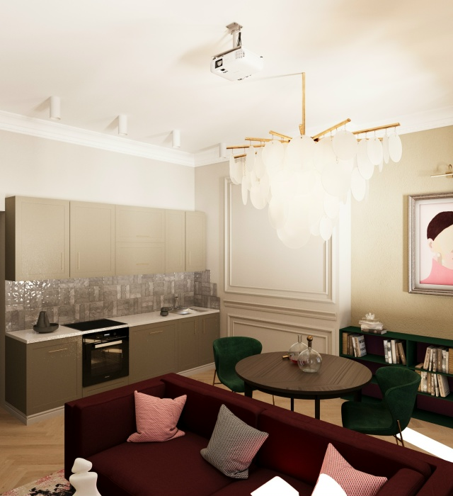
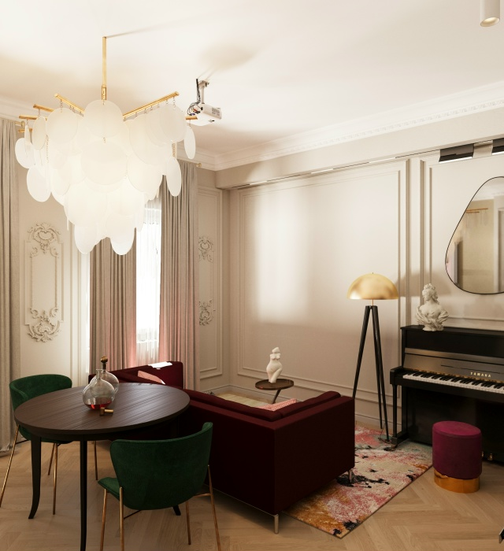

География
Публично подтверждён адрес в Туле. Работа в других городах или дистанционный формат не заявлены в просмотренных источниках.
Главная / О студии
V_Plede · Тула
Официальные источники подтверждают профиль студии, проектные форматы и контакты. Биографии, стаж и квалификации дизайнеров публично не установлены — поэтому здесь их нет.
позиционирование
Яндекс Карты относят V_Plede к дизайну интерьеров, дизайн-студиям, строительным и отделочным работам. В официальной витрине VK опубликованы планировочное решение и три уровня дизайн-проекта.
Публично подтверждён адрес в Туле. Работа в других городах или дистанционный формат не заявлены в просмотренных источниках.
Обмеры, планы монтажа и демонтажа, планировочные решения, 3D-визуализации и рабочие чертежи — в зависимости от пакета.
Телефон, VK, email и официальный сайт. WhatsApp и Telegram в просмотренных источниках не найдены.
Имя владельца, состав команды, образование, стаж и количество выполненных объектов не установлены.
визуальный язык публикации
Так официальная публикация описывает показанную кухню-гостиную. Вывод не переносится на все проекты студии.

Галерея клиентовМатериал публикации VK · 3D-визуализация
Творческий сценарийПианино, домашняя библиотека, места для картин — по тексту постаконтакт со студией